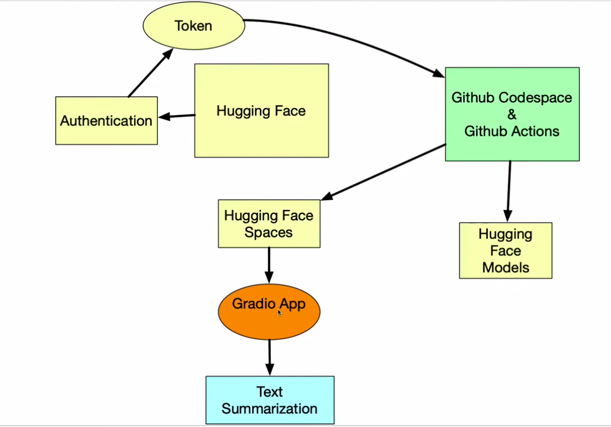

This project is focused on developing a neural network model to accurately predict the dynamics of a vehicle based on various sensor inputs. By utilizing deep learning techniques, this model aims to improve the understanding of how vehicles behave under different conditions, contributing to advancements in autonomous driving, vehicle control, and optimization systems.
The model has been trained on vehicle sensor data and is being fine-tuned to ensure high accuracy in predicting vehicle behavior in different scenarios. Future improvements include enhancing the model with more data and incorporating additional vehicle states for better control predictions.
This project showcases the use of Google Gemini and Streamlit to create a simple chatbot interface. The chatbot interacts with users to answer questions using Google's Gemini-1.5 model via the Generative AI API.
This project involves creating a question-answering bot that uses LangChain, IBM Watson AI, and a large language model (LLM) to answer questions based on content from loaded PDF documents. The bot integrates various components such as document loaders, text splitters, embedding models, vector databases, and retrievers to deliver accurate responses. The user interacts with the bot through a Gradio front-end interface, making it easy to use.
This project demonstrates the integration of MLOps principles by automating model deployment workflows using Hugging Face Spaces and GitHub Actions. The project automates syncing the local machine learning project to Hugging Face Spaces whenever new changes are pushed to the repository, streamlining the deployment process and ensuring continuous integration and delivery (CI/CD).
